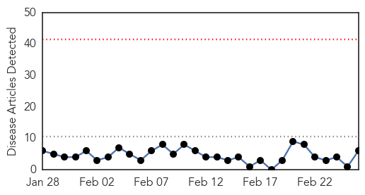
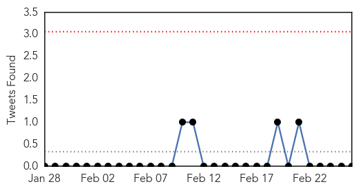
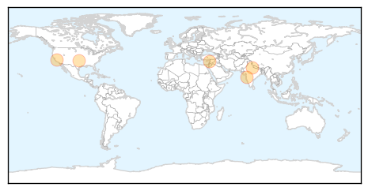
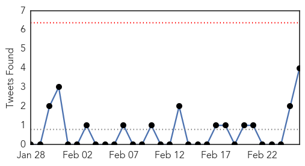

Swine Flu
30-Day Web Trend
0 alerts, 0 warnings

30-Day Twitter Trend
0 alerts, 0 warnings

Article Locations
Article Confidences

Top Articles:
- 0.998
- Four swine flu cases reported in Pune
- 0.993
- Wilkes flu death first since 2010
- 0.992
- Contra Costa County Woman Dies From Flu Virus
- 0.985
- Swine flu claims lives of four in Syria amid crisis - Xinhua
- 0.973
- Woman tests positive for H1N1, first case in Sawai Man Singh Hospital this year
- 0.933
- NORTH CAROLINA: Flu hitting young adults hardest this season
Top Tweets:
-
No tweets found for Feb 26, 2014
Unknown
30-Day Web Trend
0 alerts, 0 warnings

30-Day Twitter Trend
0 alerts, 0 warnings

Article Locations
Article Confidences

Top Articles:
- 0.984
- Doctors studying polio-like illness flooded with calls
- 0.944
- 21 dead in Japan from virus spread by mites ‹ Japan Today
- 0.917
- Chicago Tribune
- 0.917
- Chicago Tribune
- 0.917
- Chicago Tribune
- 0.917
- Chicago Tribune
- 0.917
- Chicago Tribune
- 0.917
- Chicago Tribune
- 0.917
- Chicago Tribune
- 0.917
- Chicago Tribune
- 0.917
- Chicago Tribune
- 0.917
- Chicago Tribune
- 0.917
- Chicago Tribune
- 0.917
- Chicago Tribune
- 0.917
- Chicago Tribune
- 0.917
- Chicago Tribune
- 0.917
- Chicago Tribune
- 0.917
- Chicago Tribune
- 0.917
- Chicago Tribune
- 0.910
- The world windows to Thailand
- 0.910
- The world windows to Thailand
- 0.909
- Lyme disease more common in Bay Area than previously thought
- 0.904
- Red alert! How deadly virus is putting native squirrels’ survival in jeopardy
- 0.904
- Polio-like disease hits US children
- 0.900
- Cover up out there! 21 dead in Japan from virus spread by mites
- 0.881
- Polio-Like Illness Baffles Experts
- 0.868
- What Is Rat-Bite Fever? 5 Facts About The Disease That Killed 10-Year-Old Aidan Pankey
- 0.866
- THAILAND PRESS-Red shirts lay siege to graft body's HQ
- 0.866
- Russia vows to ensure security of Ukraine-based naval fleet
- 0.866
- Scores of Syrian rebels killed in government ambush near Damascus
- 0.866
- A polio worker gives polio vaccine drops to a child in Islamabad
- 0.866
- Egypt PM reappoints some ministers-state TV
- 0.866
- A Seleka fighter reads a book while holding a gun on a base, where 500 Seleka fighters are confined, in Bangui
- 0.866
- Information Required
- 0.830
- Child Paralysis Cases Still Puzzle Doctors
- 0.800
- High hopes for malaria vaccine
- 0.751
- Polio-like illness seen in up to 25 California children
- 0.738
- First case of porcine epidemic virus confirmed on Manitoba farm
- 0.723
- N. Korea to United Nations: Help us with foot-and-mouth disease outbreak
- 0.716
- “Deepening” medical crisis in Afghanistan « RAWA News
- 0.701
- Polio-like disease appearing in several California children
- 0.668
- Paralyzing Polio-Like Illness — Symptoms To Look For
- 0.660
- Saudi- Database of medical and clinical facts launched
- 0.656
- North Korea asks UN for help with foot-and-mouth outbreak
- 0.652
- Hospitals, Patients Attacked in South Sudan, MSF Says
- 0.644
- Database of Press Releases related to Africa - APO-Source
- 0.634
- News from West Dorset, East Devon & South Somerset
- 0.624
- MSF reports 'disturbing' attacks on S. Sudan hospitals
- 0.624
- Staff relocated as conflict worsens, South Sudan
- 0.612
- DOH appeals for media responsibility amid flesh-eating disease hoax
Showing top 50 articles...
Top Tweets:
- 0.794
- Hoy en Surinam: lanzamiento de una investigación KAPs sobre el acceso a las drogas antimaláricas y su uso en áreas de minería de oro.
- 0.720
- Myth Buster No 10: I had the vaccination last year but still got the flu. Did you have a cold or the flu? Children have around 6 to 10...
- 0.520
- Hoje no Suriname: lançamento de estudo KAP sobre o acesso aos medicamentos antimaláricos e o seu uso em áreas de garimpo.
- 0.517
- Reminder for Diabetics- Go get your flu shot if you haven't already! Flu is still circulating & can cause serious complications. AskRD